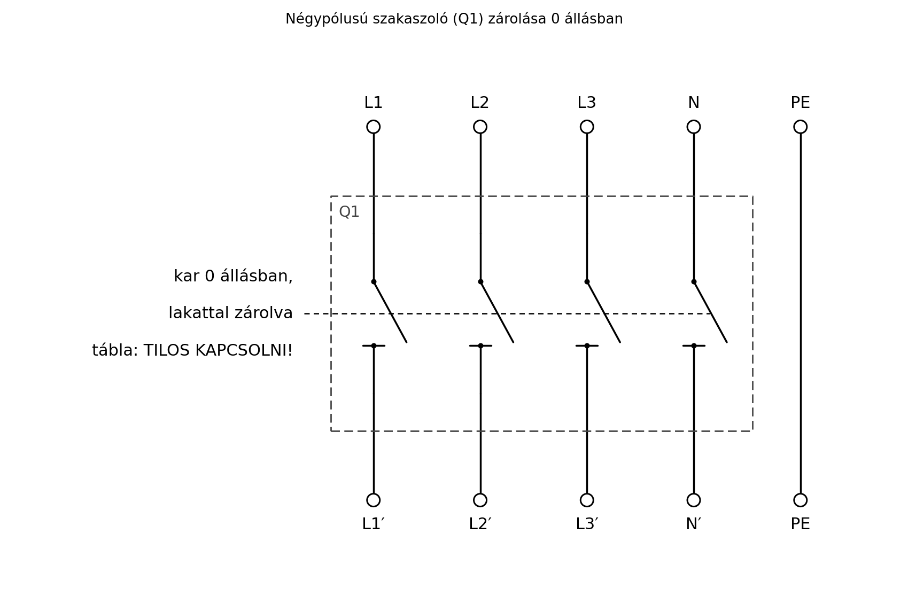

A kapcsolódó elmélet: tankönyv, 2.4 alfejezet.
Cél: Feszültségmentes állapot létrehozása és a LOTO szabályainak begyakorlása egy tanműhelyi elosztótáblán.
Eszközök és anyagok: Tanműhelyi elosztótábla (törpefeszültségű vagy leválasztott 230 V-os oktatótábla), kétpólusú feszültségvizsgáló, lakatok, tiltó táblák, szigetelő takarólemez.
Biztonsági korlát. A feladat tanműhelyi (törpefeszültségű) környezetre vagy jogosult oktató felügyeletére vonatkozik; hálózati feszültségen önállóan ne végezd.
Lépések: 1. Azonosítsd a lekapcsolási pontot: Nézd meg a tanműhelyi kapcsolási rajzot. Azonosítsd, melyik szakaszoló vagy megszakító választja le a munkaterületet. 2. Lekapcsolás (1. szabály): Kapcsold le a főkapcsolót vagy az adott áramköri megszakítót; a leválasztás minden aktív vezetőre terjedjen ki, a védővezetőt (PE) soha ne bontsd. 3. Zárolás-jelölés (2. szabály): Helyezd el a lakatot a lekapcsolt kismegszakító karján (ha van erre kialakítás), és akaszd fel a tiltó táblát; próbáld meg a kapcsolót visszakapcsolni, hogy a zárolás hatásos-e (a bekapcsolási próbát csak a lakat és a tábla felhelyezése után, a zárolt kapcsolón végezd). 4. Műszerellenőrzés (előtte): A kétpólusú vizsgálót dugd be egy ismert, feszültség alatt álló aljzatba. Győződj meg arról, hogy a kijelző a hálózati értéket mutatja. 5. Feszültségmentesség ellenőrzése (3. szabály): A munkaterületen mérj minden pontpár között: L1–L2, L2–L3, L3–L1, L1–N, L2–N, L3–N, L1–PE, L2–PE, L3–PE, N–PE. Ellenőrizd, hogy nincs jelzés. 6. Műszerellenőrzés (utána): Dugd vissza a vizsgálót az ismert aljzatba, és ellenőrizd, hogy még mindig jól működik. 7. Földelés és rövidre zárás (4. szabály): Ha az oktató vagy a munkautasítás előírja, végezd el; ha elmarad, a jegyzőkönyvben indokold (tanműhelyi, törpefeszültségű környezetben jellemzően nem szükséges). 8. Szomszédos feszültség alatti részek lefedése (5. szabály): Takard le a közeli feszültség alatti részeket szigetelő takarólemezzel. 9. A munka elvégzése: Végezd el a rád bízott feladatot (pl. egy vezeték áthelyezését a gyakorló panelen). 10. Befejezés: Ellenőrizd a szerszámokat és a személyeket, szólj a társadnak, távolítsd el a földelést és a letakarást, tedd vissza a fedeleket, majd távolítsd el a lakatot. Jelezd az oktatónak, hogy a munka kész.
Dokumentálás: Rögzítsd a vizsgáló típusát, a mért értékeket és a lekapcsolási pont azonosítóját a „Mintadokumentumok” (1) munkaengedély-mintájának rovatai szerint, a befejezést a (3) lapon.
1. feladat (A) Sorold fel az öt biztonsági szabályt. Mindegyik mellé írj egy rövid példát, hogyan lehet azt a gyakorlatban megvalósítani egy lakáselosztóban.
2. feladat (A) Igaz-e, hogy ha a kismegszakítót lekapcsoltam, akkor a nullavezető is biztosan feszültségmentes? Indokold a válaszodat.
3. feladat (B) Egy szerelő a munkavégzés előtt a kétpólusú feszültségvizsgálót bedugja a konnektorba. A műszer 230 V-ot mutat. Ezután a célterületen megméri az L1 - PE pontokat, és a műszer 0 V-ot mutat. Kijelenti, hogy a terület feszültségmentes. A biztonsági protokoll szerint mi hiányzik még a mérési lépésekből?
4. feladat (B) Rajzolj le egy 3 fázisú (L1, L2, L3 és N) lekapcsoló szakaszolót. Jelöld, hová teszed a lakatot és a tiltó táblát, ha minden pólust le kell választani.
5. feladat (C) Keresd meg a hibát: Egy munkáltató azt az utasítást adja egy villanyszerelő tanulónak, hogy „gyorsan, áram alatt cserélje ki a meghibásodott kapcsolót, mert nincs idő lekapcsolni az áramkört”. Hogyan reagálj? Milyen szabályokat sértene meg ez az utasítás?
6. feladat (D) Egy oktatóteremben egy munkapadon el kell végezned egy motor kapcsolódobozának bekötését. Írd le számozottan, lépésről lépésre, hogyan készíted elő a munkát a feszültségmentesítés és a LOTO szabályai szerint.
7. feladat (C) Minden esethez készíts ötsoros táblázatot (szabály – konkrét teendő – indoklás), és írd le, mi marad feszültség alatt. Ezek tervezési feladatok: tanulóként hálózati feszültségen a munkát nem végzed el.
1. feladat megoldása: 1. Lekapcsolás: Lekapcsolom a lakáselosztóban a főkapcsolót vagy az adott áramkör kismegszakítóját. 2. Visszakapcsolás elleni biztosítás: A kismegszakító karjára lakatolható zárószerkezetet teszek, vagy ha ilyen nincs, a lekapcsolást ott végzem, ahol zárolható (pl. a főkapcsolón), és tiltó táblát helyezek rá; a ragasztószalag nem zárolás, legfeljebb ideiglenes jelölés a tábla mellett. (Megjegyzés: élesben mindig a leválasztó szerkezethez kell lakatolni, pl. a főleválasztóhoz). 3. Feszültségmentesség ellenőrzése: Elsősorban az elvégezni kívánt munkahelyen (a vezeték végein) kétpólusú műszerrel megmérem az L–N, L–PE és N–PE pontpárt (háromfázisú körnél mind a tíz pontpárt). Előtte és utána ellenőrzöm a műszer működését. 4. Földelés és rövidre zárás: Lakáselosztóban általában nem szükséges, de ha hosszú, párhuzamosan futó kábelben indukált feszültség feltételezhető, el kell végezni. 5. Lefedés: Ha az elosztóban más, feszültség alatt álló gyűjtősín van a munkaterület közelében, szigetelő lappal lefedem.
2. feladat megoldása: Hamis. A kismegszakító hagyományosan csak a fázist szakítja meg. A nullavezető másik áramkörből származó visszacsatolás, vagy terhelés melletti PEN-vezető szakadásakor feszültség alá kerülhet. Soha nem szabad feltételezni, hogy a nulla feszültségmentes, mindig mérni kell.
3. feladat megoldása: Két dolog hiányzik. (1) A mérés nem teljes: a háromfázisú munkahelyen mind a tíz pontpárt mérni kell (L1–L2, L1–L3, L2–L3, L1–N, L2–N, L3–N, L1–PE, L2–PE, L3–PE, N–PE), mert egy be nem kapcsolt pólus vagy a nullavezető feszültsége csak így derül ki. (2) Hiányzik a műszer utána történő ellenőrzése. A mérés befejezése után a műszert ismét be kell dugni az ismert feszültség alatt álló konnektorba, hogy megbizonyosodjunk arról, a műszer a mérés közben nem romlott el. Ha a műszer éppen a mérés pillanatában hibásodik meg (pl. a mérőzsinór megszakad), akkor a 0 V-os eredmény hamis, és a szerelő életveszélybe kerülhet.
4. feladat megoldása: A kapcsolási rajzon a négypólusú szakaszoló (Q1) az L1, L2, L3 és N vezetőt bontja; a PE-t nem.

A rajz olvasása három pontban:
Ellenőrzés: a zárolás után bekapcsolási próbát végzünk a lezárt karon – a kar nem mozdulhat. Ezután következik a 3. szabály, a feszültségmentesség ellenőrzése a kimeneti oldalon.
5. feladat megoldása: Az utasítás jogszabályba ütközik és életveszélyes. Meg kell tagadni a munkát. A tanuló nem végezhet feszültség alatti munkát, a munkáltató pedig nem utasíthat erre. Az utasítás sértené a feszültségmentesítés öt biztonsági szabályát, valamint a munkavédelmi törvénynek a munkavállaló biztonságáért való felelősségére vonatkozó alapelveit.
6. feladat megoldása: 1. Műhelymunka regisztrálása: Jelzem az oktatónak a munkavégzés szándékát. 2. Lekapcsolás: Lekapcsolom a munkapad tápellátását a munkapadi leválasztó kapcsolóval. 3. Zárolás: A leválasztó kapcsolóra elhelyezem a saját, feliratozott lakatomat és a „Tilos kapcsolni! Munkavégzés” táblát (név, dátum); megpróbálom bekapcsolni a kapcsolót, hogy a zárolás hatásos-e. 4. Műszerellenőrzés (előtte): A kétpólusú vizsgálóval megmérek egy ismert, feszültség alatt álló konnektort. 5. Feszültségmentesség ellenőrzése: A motor kapocsdobozában minden pontpár között mérek (U1–V1, U1–W1, V1–W1, valamint a kapcsok és a védővezető (PE) között), és a bejövő tápkábel erein is (L1–L2, L1–L3, L2–L3, minden fázis–PE és N–PE között). 6. Műszerellenőrzés (utána): Újra megmérem az ismert konnektort. 7. Földelés és rövidre zárás (4. szabály): az oktató/munkautasítás szerint; a törpefeszültségű vagy leválasztott munkapadon jellemzően nem szükséges – ezt a jegyzőkönyvben indoklással rögzítem. 8. Szükség esetén lefedés: Ha a szomszédos munkapad feszültség alatt van, és közel van, szigetelő takarólapot helyezek el. 9. A munkavégzés: Elvégzem a bekötést. 10. Végellenőrzés: Meggyőződöm a szerszámok meglétéről és arról, hogy mindenki elhagyta a veszélyzónát (a személyek ellenőrzése). 11. Földelés és letakarás eltávolítása: Ha volt földelés vagy letakarás, eltávolítom, és naplózom; ezután visszahelyezem a kapocsdoboz fedelét. 12. Zárolás feloldása: Eltávolítom a lakatot, és jelzem az oktatónak, hogy a munka kész.
7. feladat megoldása:
1. eset – konyhai aljzatkör
| Szabály | Konkrét teendő | Indoklás |
|---|---|---|
| 1. Lekapcsolás | B16 ki; mivel a nullát nem bontja, a csoport FI-je vagy a főkapcsoló is | a nullán más körök árama miatt feszültség lehet |
| 2. Biztosítás | karzár a kismegszakítón, illetve a FI vagy a főkapcsoló zárolása, tábla | más ne kapcsolhassa vissza |
| 3. Mérés | L–N, L–PE, N–PE (3 pár) a munkahelyen, előtte–utána ellenőrzés | rossz kör, nem bontott nulla kiderül |
| 4. Földelés | nem szükséges, indokolva | nincs visszatáplálás, indukált feszültség |
| 5. Letakarás | ha az elosztó nyitva marad, a többi kör és a betáp kapcsai | érintés, zárlat ellen |
Feszültség alatt marad: az elosztó betápja és a többi kör.
2. eset – kompresszormotor
| Szabály | Konkrét teendő | Indoklás |
|---|---|---|
| 1. Lekapcsolás | +E2-Q11 (vagy +E2-Q10) minden pólust bont; a motor teljes leállását megvárni | forgó alkatrész |
| 2. Biztosítás | lakat a Q11 forgókarján (ha nem zárolható, a Q10-en), tábla | a vezérlés ne indíthassa |
| 3. Mérés | U1–V1, U1–W1, V1–W1, U1–PE, V1–PE, W1–PE (6 pár), előtte–utána | a kapocsdoboz minden aktív kapcsa |
| 4. Földelés | jellemzően nem szükséges | egyedi fázisjavító kondenzátornál a kifutó motor felgerjedhet, a kapcsokon feszültség lehet (ellenőrizendő; Fázisjavítás méretezése (tankönyv, 36.1)) |
| 5. Letakarás | a feszültség alatt maradó vezérlőkör (pl. külön táplált 24 V) | véletlen érintés, zárlat ellen |
Feszültség alatt maradhat: a Q11 betáp oldala (ha a Q10 bekapcsolva marad), külön táplált vezérlés.
3. eset – kismegszakító-csere feszültség alatti gyűjtősínnel
| Szabály | Konkrét teendő | Indoklás |
|---|---|---|
| 1. Lekapcsolás | a kismegszakító lekapcsolása nem elég: a betáp felőli kapcsa a sínhez tartozik | a sín feszültség alatt marad |
| 2. Biztosítás | a helyes megoldásban a főkapcsoló zárolása | megrendelt, ütemezett lekapcsolás |
| 3. Mérés | a főkapcsoló lekapcsolása után mind a 10 pár a sínen | csak így igazolt a feszültségmentesség |
| 4. Földelés | a munkautasítás szerint | – |
| 5. Letakarás | a főkapcsoló betáp felőli kapcsai | – |
Feszültség alatt marad lekapcsolás nélkül: a gyűjtősín és a készülék betáp felőli kapcsa. Ez feszültség közeli munka: letakarás és kijelölt, kioktatott személy kell, tanulónak tilos. A helyes út a főkapcsoló lekapcsolásának megszervezése (lásd Kockázatértékelés, védőeszközök, balesetek és tűzvédelem (tankönyv, 2.2)).
4. eset – inverter AC-oldala
| Szabály | Konkrét teendő | Indoklás |
|---|---|---|
| 1. Lekapcsolás | AC-oldali leválasztó és a lakáselosztó kismegszakítója és a DC-leválasztó | két forrás: hálózat és modulok |
| 2. Biztosítás | mindkét leválasztó zárolása, táblák | – |
| 3. Mérés | gyártói várakozás után AC: mind a 10 pár; DC: +/−, +/PE, −/PE | tárolt energia az inverterben |
| 4. Földelés | a gyártó és a munkautasítás szerint | DC-oldalt csak a gyártói utasítás szerint szabad rövidre zárni |
| 5. Letakarás | a DC-oldali, feszültség alatt maradó kapcsok | – |
Feszültség alatt marad: a modulok és a DC-kábel a leválasztóig; az inverter belső kondenzátorai a gyártó által megadott ideig (ellenőrizendő). Lásd Napelemes rendszerek és háztartási méretű kiserőmű (tankönyv, 36.3).
5. eset – kerti lámpaoszlop
| Szabály | Konkrét teendő | Indoklás |
|---|---|---|
| 1. Lekapcsolás | a kör kismegszakítója és FI-je (a nulla is) | minden aktív vezető |
| 2. Biztosítás | zárolás az elosztóban, tábla | az oszlop az elosztótól nem látható |
| 3. Mérés | L–N, L–PE, N–PE terhelőgombos kétpólusú vizsgálóval | a nagy belső ellenállású műszer kapacitív („fantom”) feszültséget mutathat |
| 4. Földelés | földelés-rövidre zárás a munkahelyen indokolt | a párhuzamos terhelt kábel feszültséget indukálhat |
| 5. Letakarás | a szomszédos, feszültség alatti részek, ha vannak | – |
Feszültség alatt marad: a párhuzamos kábel (és indukálás miatt a kikapcsolt ér is lehet).
6. eset – UPS-es vezérlőszekrény
| Szabály | Konkrét teendő | Indoklás |
|---|---|---|
| 1. Lekapcsolás | a hálózati főkapcsoló és a UPS kimenete (a megkerülő ág is) | két forrás |
| 2. Biztosítás | mindkét leválasztás zárolása | – |
| 3. Mérés | a hálózati és a UPS-ről táplált vezetők minden párja és PE felé is | a UPS a hálózat nélkül is táplál |
| 4. Földelés | a munkautasítás szerint | – |
| 5. Letakarás | a UPS bemeneti és akkumulátorköre | – |
Feszültség alatt marad: ha csak a főkapcsolót kapcsolod le, a UPS kimenete; az akkumulátor mindig. Lásd Szünetmentes áramforrások, aggregátorok és akkumulátorok (tankönyv, 36.2).
A hét mérési eset (E1–E7) megoldása: